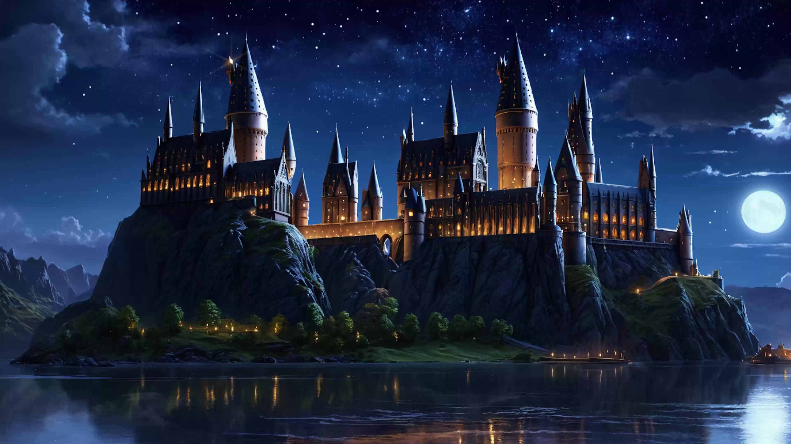
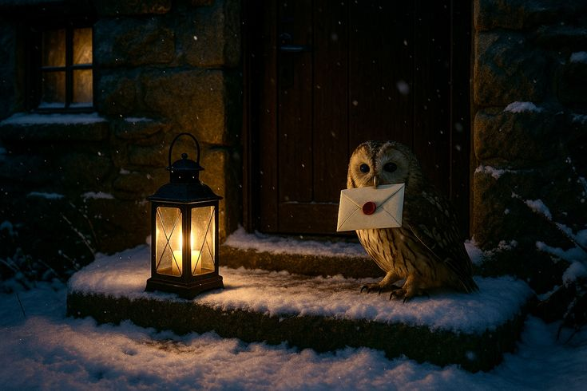
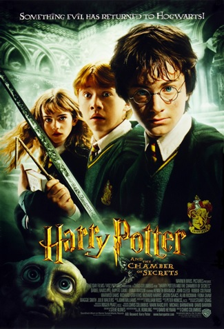
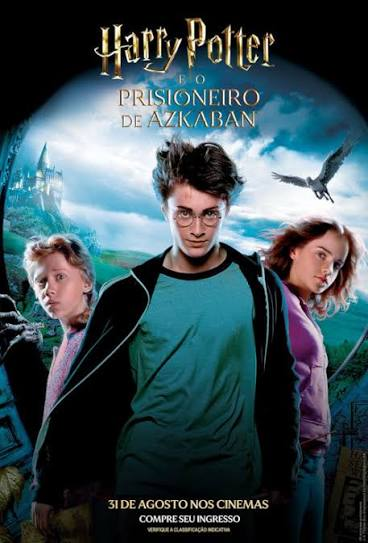
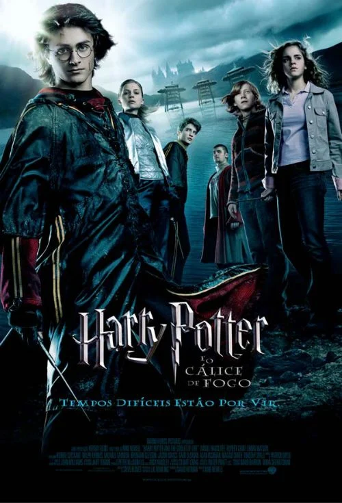
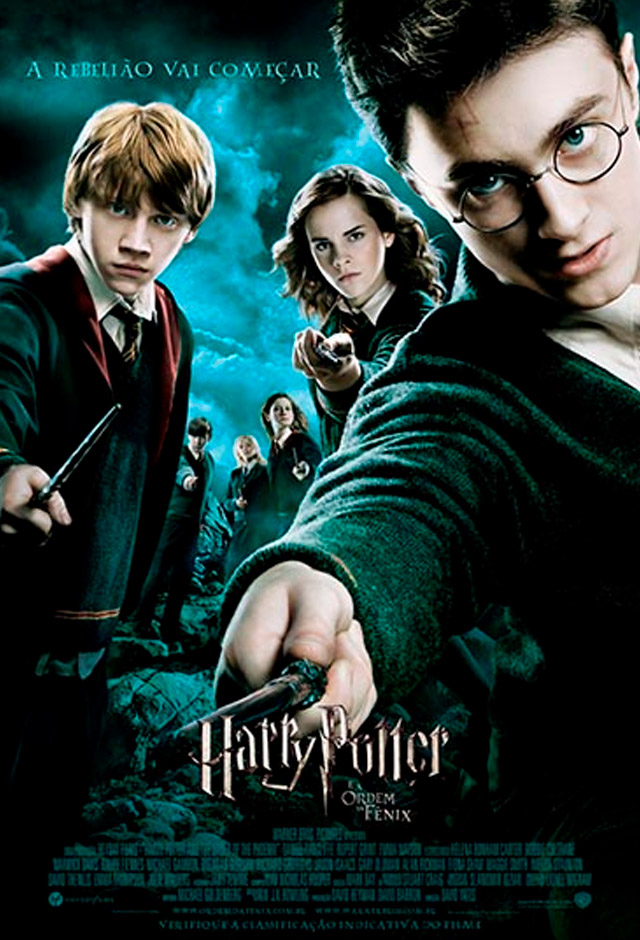
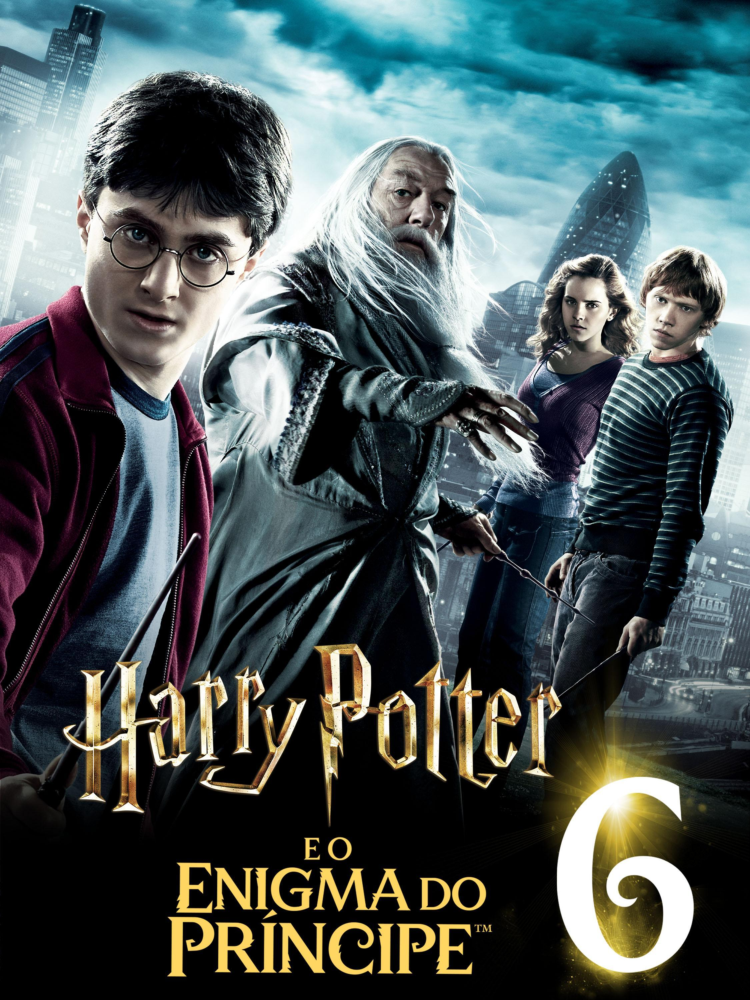
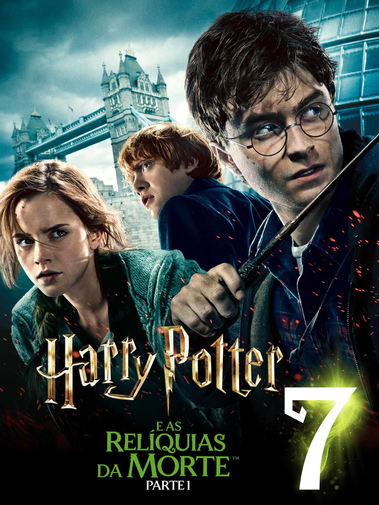
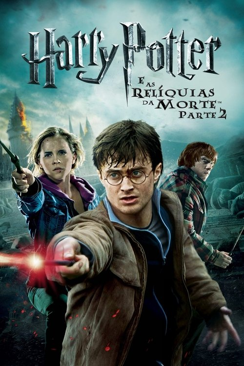
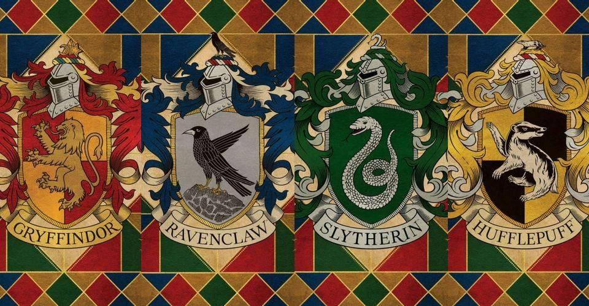

Explorando A Franquia:

Sobre Harry Potter:
O universo de Harry Potter:
Harry Potter é uma franquia de fantasia que acompanha a vida de um jovem bruxo que descobre seus poderes aos onze anos e passa a estudar na Escola de Magia e Bruxaria de Hogwarts. Ao lado de seus amigos Rony Weasley e Hermione Granger, Harry enfrenta desafios, descobre segredos sobre seu passado e luta contra Lord Voldemort, um bruxo das trevas que ameaça todo o mundo mágico. A história aborda amizade, coragem, escolhas, amor, preconceito e a importância de enfrentar aquilo que é injusto
Dos livros para as telas:
A saga literária de Harry Potter foi escrita por J. K. Rowling e é composta por sete livros. A adaptação cinematográfica conta com oito filmes, pois o último livro, Harry Potter e as Relíquias da Morte, foi dividido em duas partes. Os filmes deram vida a personagens, cenários e acontecimentos que conquistaram fãs no mundo inteiro. Apesar disso, algumas histórias, personagens e detalhes dos livros foram modificados ou deixados de fora durante as adaptações.
Muito além da magia:
Harry Potter não é apenas uma história sobre feitiços e criaturas mágicas. Ao longo da saga, acompanhamos personagens que amadurecem, enfrentam perdas, cometem erros e aprendem a fazer escolhas difíceis. A amizade entre Harry, Rony e Hermione é um dos pilares da narrativa, enquanto os conflitos entre diferentes grupos do mundo bruxo abordam temas como preconceito, poder, liberdade e sacrifício. É uma história sobre como nossas escolhas podem revelar muito mais sobre nós do que nossas habilidades.
Ficha rápida da franquia:
- Autora dos livros: J. K. Rowling.
- Gênero principal: fantasia.
- Quantidade de livros da saga principal: 7
- Quantidade de filmes da saga principal: 8.
- Escola de magia mais importante da história: Hogwarts.
- Protagonista: Harry Potter.
- Melhores amigos do protagonista: Rony Weasley e Hermione Granger.
- Principal antagonista: Lord Voldemort.
- Esporte bruxo mais conhecido: Quadribol.
“Não são nossas habilidades que mostram quem realmente somos, são nossas escolhas.”

Ordem dos filmes:
-
Harry Potter e a Pedra Filosofal (2001)
Harry descobre que é um bruxo, conhece Hogwarts e faz amizade com Rony e Hermione. Juntos, eles se envolvem em um mistério relacionado à Pedra Filosofal.

-
Harry Potter e a Câmara Secreta (2002)
No segundo ano em Hogwarts, alunos começam a ser petrificados e Harry precisa descobrir quem está por trás dos ataques e qual é o segredo da Câmara Secreta.

-
Harry Potter e o Prisioneiro de Azkaban (2004)
A fuga de Sirius Black de Azkaban provoca uma série de descobertas sobre o passado de Harry, seus pais e pessoas ligadas à antiga história da família Potter.

-
Harry Potter e o Cálice de Fogo (2005)
Harry é misteriosamente selecionado para participar do Torneio Tribruxo, uma competição perigosa que termina com o retorno de Voldemort.

-
Harry Potter e a Ordem da Fênix (2007)
Enquanto o Ministério nega o retorno de Voldemort, Harry e seus amigos se organizam para aprender a se defender e enfrentar a ameaça que se aproxima.

-
Harry Potter e o Enigma do Príncipe (2009)
Harry aprende mais sobre o passado de Voldemort e tenta compreender o segredo de sua busca pela imortalidade, enquanto o perigo se aproxima de Hogwarts.

-
Harry Potter e as Relíquias da Morte — Parte 1 (2010)
Longe de Hogwarts, Harry, Rony e Hermione partem em uma jornada para encontrar e destruir as Horcruxes, enfrentando perigos e conflitos que colocam sua amizade à prova.

-
Harry Potter E As Relíquias Da Morte — Parte 2 (2011)
A busca pelas Horcruxes chega ao fim, e a batalha por Hogwarts define o destino de Harry, Voldemort e do mundo bruxo.

Para acompanhar a história principal pela primeira vez, assista aos filmes nessa ordem. Ela corresponde à sequência de lançamento e ao desenvolvimento da história.

Casas de Hogwarts:
Quando chegam a Hogwarts, os estudantes são encaminhados para uma das quatro casas da escola pelo Chapéu Seletor. Cada casa possui uma história, valores, símbolos e características próprias. Embora algumas qualidades sejam tradicionalmente associadas a cada uma, nenhum estudante é definido por uma única característica.
“Não existe uma casa que seja superior a todas as outras. Cada uma valoriza qualidades diferentes, e todas contribuíram para a história de Hogwarts. Mais importante do que a casa à qual pertencemos são as escolhas que fazemos e a maneira como tratamos as outras pessoas.”